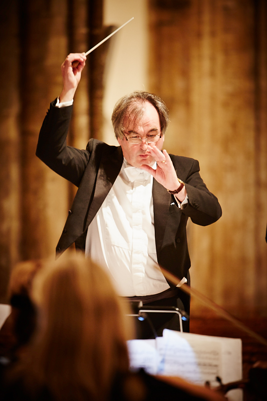

About CCSO - Forty Years of Music Making
The City of Cardiff Symphony Orchestra was formed in September 1981 to fill a gap at that time for symphonic music making of a high standard for the many gifted amateur musicians in the Cardiff area. The orchestra has performed over 150 concerts in and around Cardiff with a repertoire of well over 200 orchestral works.The orchestra has been conducted since 1989 by Martin McHale. Martin’s prodigious musical talents, his patience and good humour make our concert preparations a thoroughly enjoyable and worthwhile experience. His choice of music makes for an interesting mix of “standard” orchestral repertoire with less-well-known works. As an added bonus, a number of Martin’s professional colleagues and acquaintances have performed concerti with the orchestra.
Note: If you would like to be notified of our future concerts by email, please contact us. We will not pass your details on to any third party and you will be able to unsubscribe at any time. 
Martin McHale BEM - Conductor
Martin McHale was born in Stirling, Scotland and began his musical life in his local brass band and led the National Youth Brass Band of Scotland. After a productive period as a member of the Brighouse and Rastrick Band, Martin switched from cornet to trumpet, studying first with Allan Young at the Huddersfield School of Music and subsequently as a Postgraduate at the Royal Northern College of Music with John Dickinson before completing his student career at the National Centre for Orchestral Studies based at Goldsmiths College, London. After a short period as a freelance player appearing with the Hallé, BBCPO, RLPO, RSNO and the SCO, he accepted a position of second trumpet with the orchestra of Welsh National Opera. Martin has taught at Cardiff University since 1995 and also teaches at the Junior Conservatoire at the Royal Welsh College of Music and Drama. In 2020 Martin was awarded the British Empire Medal for his services to amateur music.
Denise Richardson - Leader
Denise was brought up in the Vale of Glamorgan and began playing the violin at the age of eight. She had lessons from Walter Gerhardt and later from Alfredo Wang while studying for a music degree at Cardiff University. Denise was a member of the National Youth Orchestra of Wales and she continued to develop her orchestral experience in university and she led the university orchestra in her final year. While studying in Cardiff, Denise achieved an L.R.A.M diploma on the violin and an L.T.C.L. on the piano. Following her studies, she began her career in the Civil Service and is currently an IT project manager in Companies House. Music has continued to be an important part of her life, however, and she has played in many amateur orchestras and ensembles over the years. Denise has been a member of the City of Cardiff Symphony Orchestra since its foundation in 1981 and she has led the orchestra since 1988.
 Follow us on facebook
Follow us on facebook